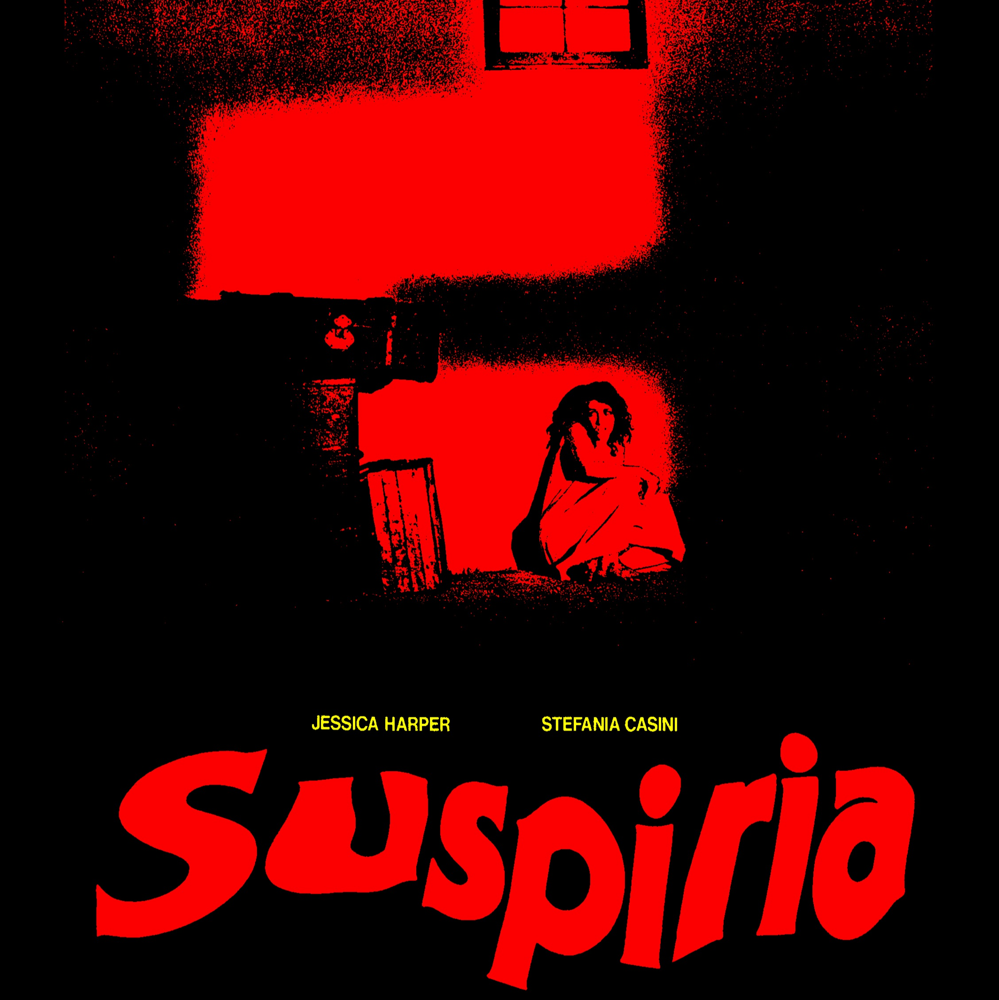
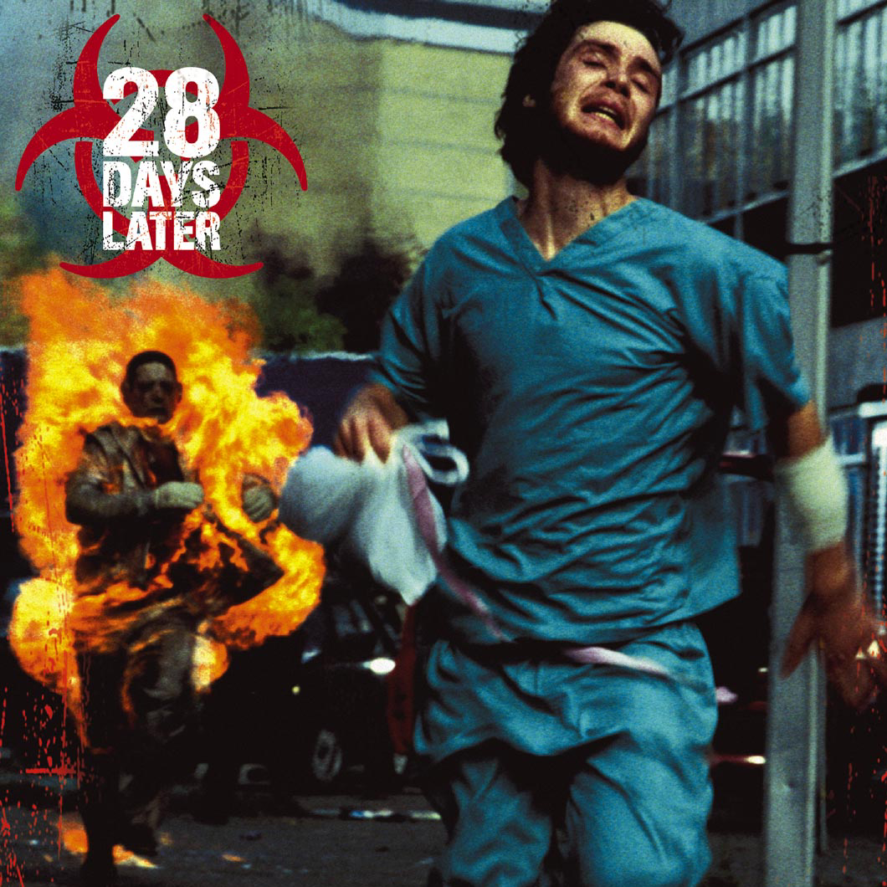
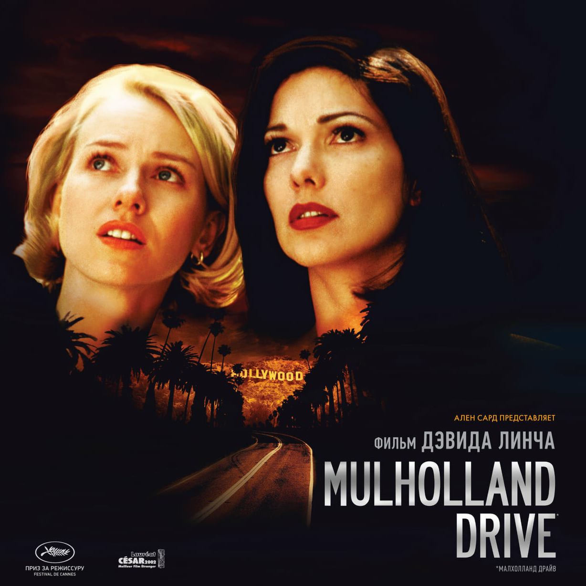
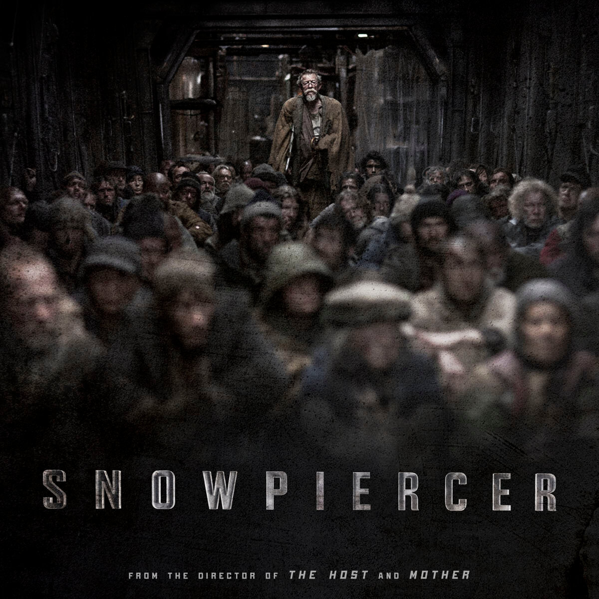
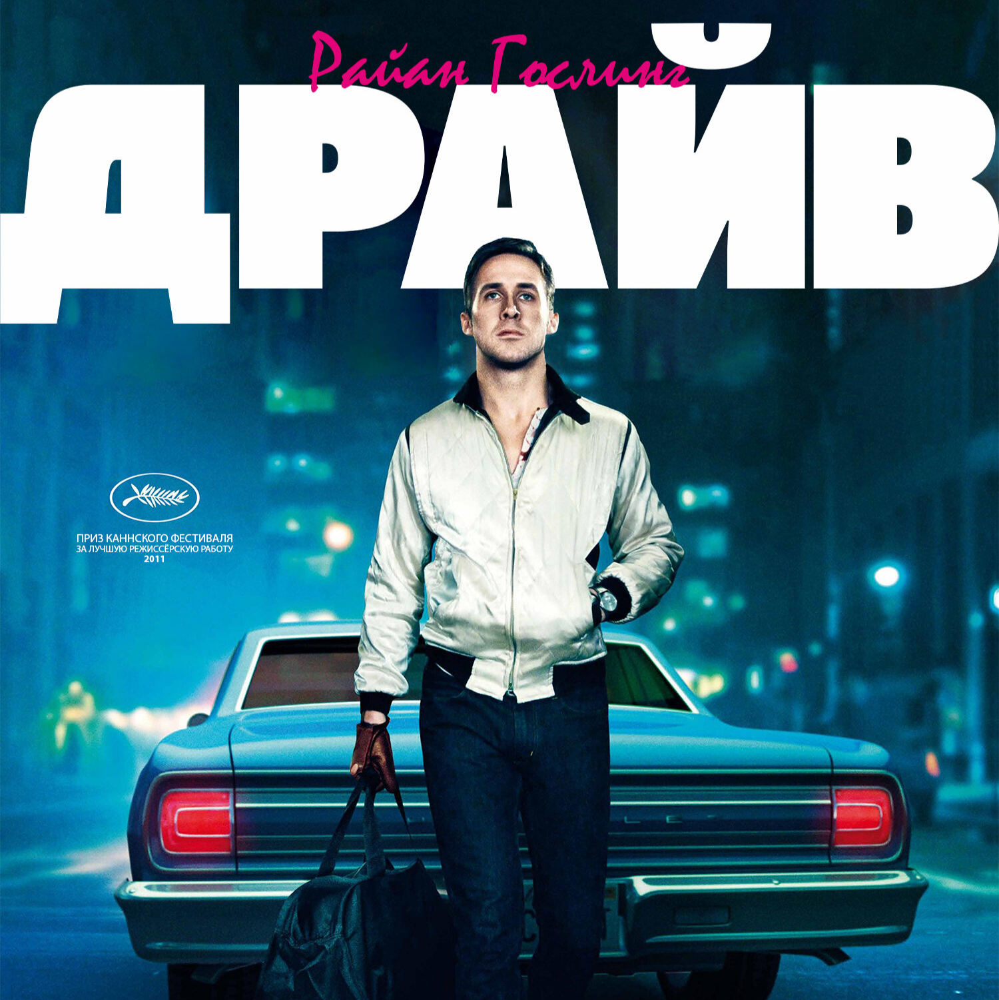

Ужасы

Суспирия
Танцевальная школа превращается в кошмар, когда студентка раскрывает страшные тайны. Мрак и магия переплетаются в этом месте, а за каждым шагом скрывается смертельная опасность для всех.

Тихое место
В мире, где монстры охотятся по звуку, семья пытается выжить, соблюдая тишину. Один неверный шаг может стать фатальным, и каждый день превращается в борьбу за выживание.

28 дней спустя
После вирусной эпидемии, превращающей людей в агрессивных существ, группа выживших сражается за жизнь в постапокалиптическом Лондоне. Каждое решение их может стать последним.
Триллеры

Малхолланд Драйв
Героиня фильма начинает новую жизнь в Голливуде, но сталкивается с женщиной, утратившей память. Расследуя её прошлое, они попадают в лабиринт, где сновидения и реальность переплетаются, а судьба рушится.

Чёрный лебедь
Балерина на грани безумия пытается завоевать роль своей жизни. В борьбе за совершенство она теряет контроль над собой, погружаясь в мрак своего внутреннего мира и теряя связь с реальностью.

Сквозь снег
После глобальной катастрофы выжившие едва держатся в поезде, бесконечно путешествующем по Земле. Внутреннее восстание среди людей, запертых в поезде, пробуждается, и борьба за выживание становится безжалостной.
Криминал

Неоновый демон
Молодая модель в поисках славы оказывается в мире жестокой конкуренции. Желание стать идеальной превращает её жизнь в смертельную игру, где зависть и обожание сталкиваются в смертельном танце.

Драйв
Водитель на ночных дорогах помогает девушке, но вовлекается в опасную игру с преступниками. Каждый момент становится решающим, и его жизнь зависит от того, кто будет первым — он или его враги.

Полуночный экспресс
Молодой фотограф становится свидетелем жестокого убийства в метро Нью-Йорка и решает расследовать происшествие. Однако он вскоре осознает, что за этим стоит нечто намного более зловещее, чем он мог представить.